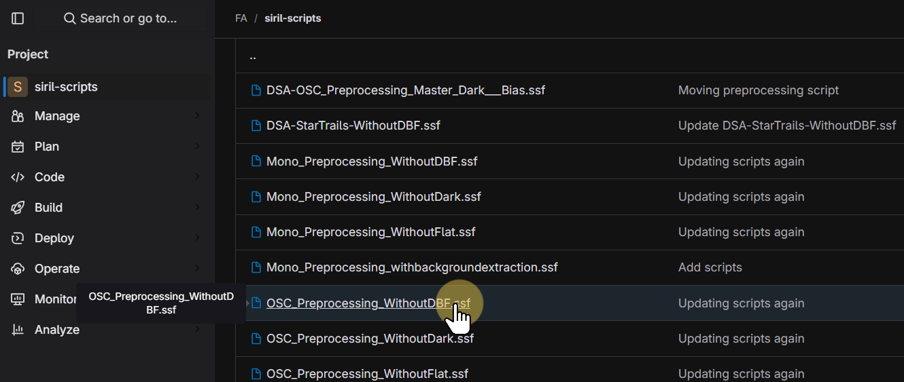
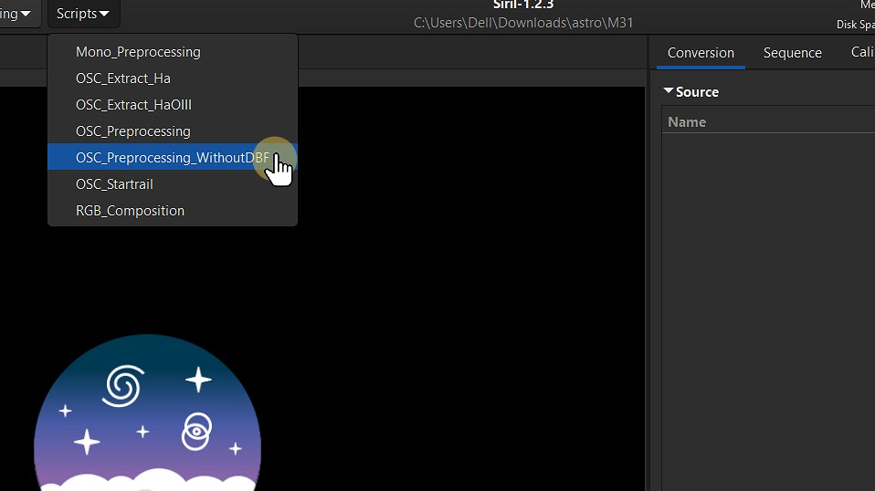
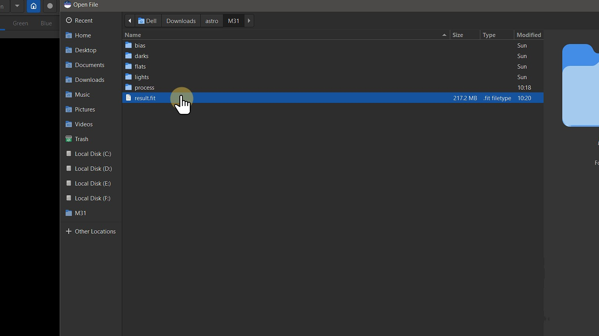
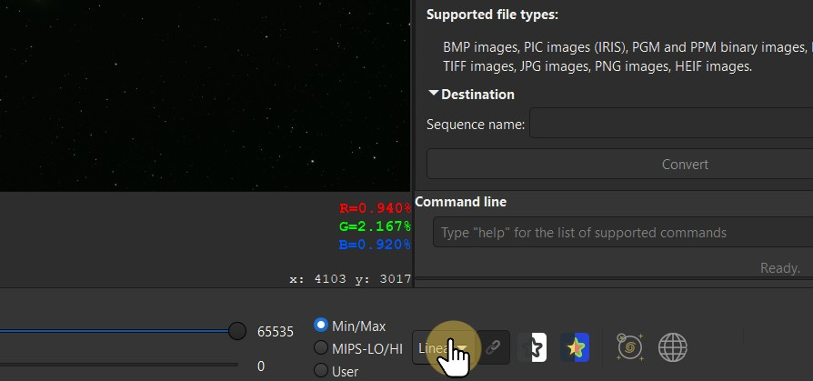
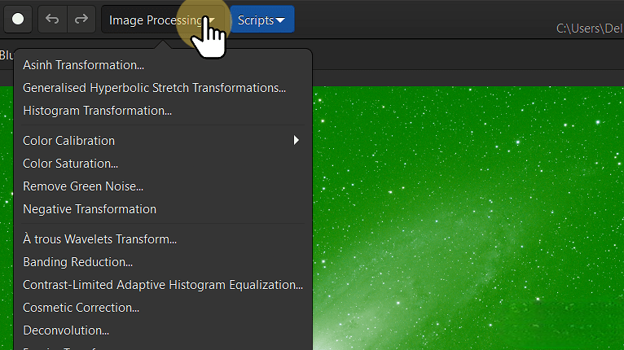

Tutorial de Siril: apilado y procesado de imágenes en astrofotografía
Traducción al español del tutorial de Siril basado en el trabajo de Sathvik Acharya.
Requisitos
Para seguir este tutorial necesitarás Siril instalado en tu sistema y un conjunto de imágenes en bruto (lights, darks, flats, etc.) de una sesión de astrofotografía. [file:11]
Descarga de datos de ejemplo
Puedes utilizar los datos de ejemplo proporcionados en el tutorial original o tus propios datos de sesión. [file:11]
Cargar imágenes en Siril
Abre Siril y carga tus imágenes light, dark, flat y bias siguiendo los menús de secuencia. [file:11]

Apilar imágenes
- 1. Haz clic en Scripts en el menú superior.

- 2. Selecciona OSC_Preprocessing_WithoutDBF de la lista de scripts disponibles.

- 3. Haz clic en Run para ejecutar el script.

- 4. Espera a que el script termine. Puedes ver el progreso de la ejecución en la ventana de consola.

La imagen final apilada se guardará en el directorio principal llamado M31.
- 5. Para abrir la imagen apilada final, haz clic en Open en el menú superior.

- 6. La imagen final apilada se llamará result.fit y se guardará en formato FITS. Selecciona result.fit y haz clic en Open para cargarla.

- 7. Esta es la imagen apilada en bruto de M31 mostrada en vista lineal.

- 8. Para cambiar de Linear a Autostretch, haz clic en Linear y selecciona Autostretch para ajustar la vista de la imagen.


Nota: Autostretch aplica un estirado temporal a los datos de la imagen, haciendo que los detalles débiles sean más visibles sin alterar permanentemente los datos en bruto. Es útil para previsualizar la imagen apilada antes de realizar más procesado.

Nota: después de aplicar Autostretch a la imagen apilada, puedes notar ruido verde. Es algo habitual y se puede corregir en etapas posteriores del procesado.
- 9. Para cambiar a la vista de Histograma, selecciona Histogram entre las opciones de visualización. Cambiar a la vista de histograma te proporciona un control más fino sobre el rango tonal de la imagen, permitiendo una mejor visualización de los detalles y ajustes de exposición.

En la vista de Histograma puedes ver la distribución de valores de píxel de la imagen. Esta vista es útil para ajustar niveles de brillo y contraste.
Postprocesado básico
Después del apilado, puedes aplicar procesos adicionales como eliminación de gradientes, ajuste de color, reducción de ruido y realce de detalles. [file:11]

Recursos adicionales
- Documentación oficial de Siril.
- Blogs y tutoriales de astrofotografía como AstroBackyard o Astropix.
Contacto y créditos
Tutorial original: Sathvik Acharya. Traducción y adaptación: proyecto sirilastro-es. [page:1]
Puedes encontrar el código fuente y esta traducción en GitHub: Repositorio sirilastro-es.